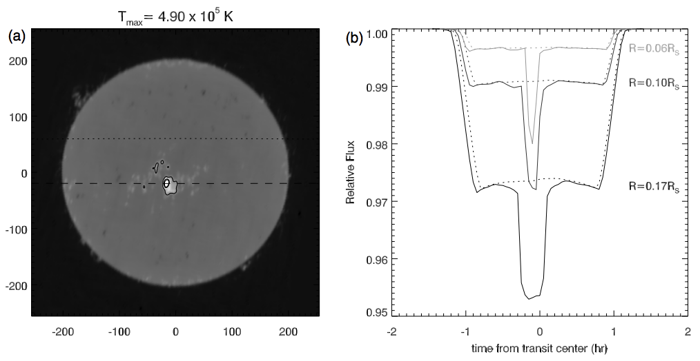
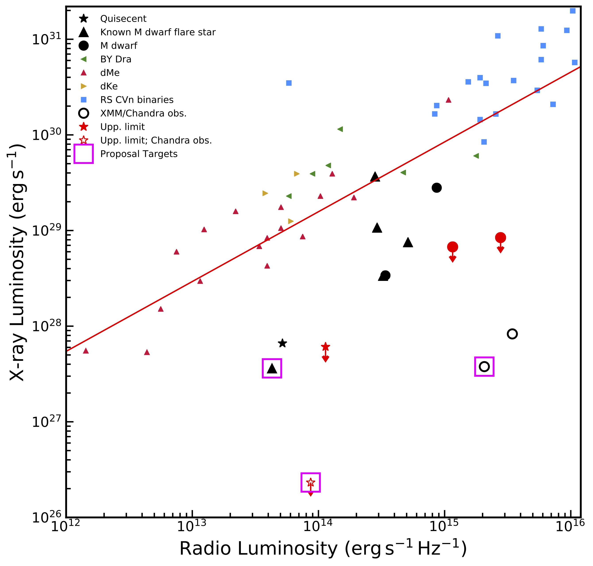

Radio Observatons
of Star-Planet Magnetic Interaction
Benjamin Pope, UQ
Callingham et al. 2021: "The population of M dwarfs observed at low radio frequencies", Nature Astronomy
Pope et al. 2021: "The TESS View of LOFAR Radio-Emitting Stars", ApJL
benjaminpope.github.io/talks/usq/usq.html
Radio Astronomy
Theorists now say that expanded ionospheres of hot Jupiters might self-absorb this emission down to undetectable levels.
Radio Stars and Transits
The first radio images of the Sun revealed that emission is dominated by active regions (sunspots)

Using 17 GHz maps of the Sun Selhorst et al predicted deep transits across active regions as seen by ALMA.
How well might we do with the SKA?
Using SKA design specifications, we calculate the sensitivity of the SKA to transits around solar-like stars (using VLA fluxes of ε Eridani and the MWA SED of the Sun) and M dwarfs (scaled from LHS 3003), we predict the sensitivity of the SKA to transits.
Magnetospheres
Twinkling and Refraction

... and broadband strong lensing from refraction through its mean density profile.

LOFAR
GJ 1151

... but GJ 1151 is inactive and this emission is steady during the epoch it is detected.
Güdel-Benz Relation
HARPS RVs

Posterior Parameters

RV Followup inconclusive: Pope+ 2020, Mahadevan+ 2021, Perger+ 2021
Upper limit of 1.2m/s - about an Earth mass in a few day orbit.

The Whole Sample
Güdel-Benz Diagram

Active stars

Quiescent stars

The Future
With the SKA - hundreds!